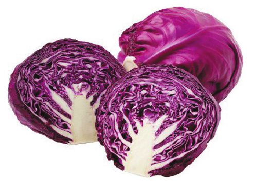
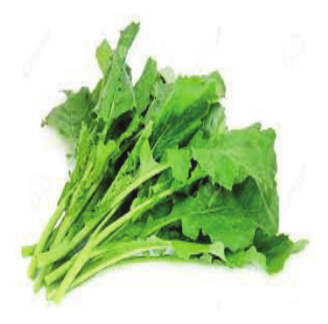
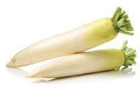
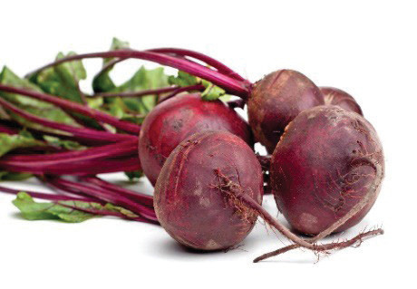
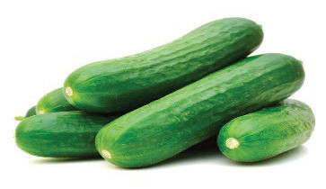
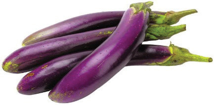

Figure 4.10: Leafy vegetables
Root vegetables: These are edible underground parts of plants. These vegetables exclude tubers. They include carrots, beetroots and radishes. Figure 4.11 shows root vegetables.


Figure 4.11: Root vegetables
Fruit vegetables: These vegetables produce edible fruits. Some examples of fruit vegetables include tomatoes, cucumbers, chillies, okra or Lady’s finger and eggplants. Figure 4.12 shows fruit vegetables.


Figure 4.12: Fruit vegetables
58